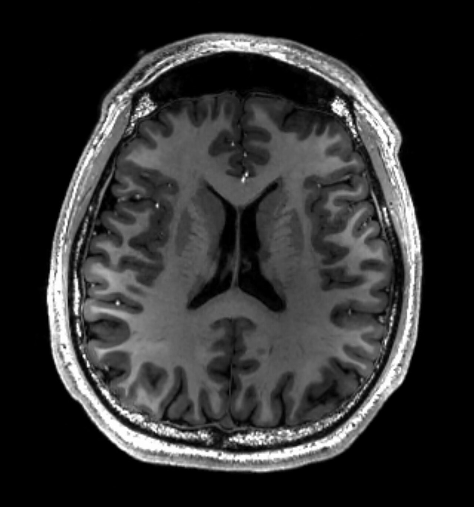

Ficha del catálogo
Resonancia magnética cerebral
- Sistema
- Nervioso
- Modalidad
- RM
- Región
- Cráneo
- Dificultad
- Intermedio
La resonancia ofrece el mejor detalle del tejido cerebral y no emplea radiación ionizante. Es el estudio de elección en tumores, enfermedades desmielinizantes, epilepsia, patología de fosa posterior y en todo aquello que la tomografía no resuelve.
Técnica
Se adquieren múltiples secuencias complementarias (T1, T2, FLAIR, difusión, eco de gradiente) en varios planos, con administración de gadolinio cuando se sospecha ruptura de la barrera hematoencefálica.
Qué observar
- En T1 la anatomía se ve de forma intuitiva: Sustancia blanca más clara que la gris y líquido cefalorraquídeo oscuro
- En T2 el líquido cefalorraquídeo y la mayoría de las lesiones aparecen brillantes
- En FLAIR se suprime la señal del líquido, lo que hace resaltar las lesiones periventriculares
- En difusión, el infarto agudo brilla intensamente pocos minutos después de instaurarse
- Simetría entre hemisferios y estructuras de la línea media
- Realce tras gadolinio, que indica alteración de la barrera hematoencefálica por tumor, infección o inflamación
Hallazgos
Estudio cerebral con diferenciación normal entre sustancia gris y blanca, sistema ventricular de tamaño conservado y estructuras de la línea media centradas.
Perlas
Regla mnemotécnica sencilla para no confundirse: En T2 el agua se ve blanca ('T2 igual a H2O'). Con eso basta para identificar cualquier secuencia mirando el líquido cefalorraquídeo de los ventrículos: Si está negro es T1, si está blanco es T2, y si está negro pero hay lesiones blancas alrededor es FLAIR.
Diagnóstico diferencial
- Lesiones desmielinizantes
- Son lesiones ovaladas hiperintensas en FLAIR, de disposición perpendicular a los ventrículos y con afectación del cuerpo calloso, y las activas realzan tras gadolinio.
- Lesiones isquémicas de pequeño vaso
- Se distribuyen en la sustancia blanca profunda y periventricular de forma confluente en pacientes con factores de riesgo vascular, sin realce ni afectación del cuerpo calloso.
- Tumor cerebral primario
- Es una lesión con efecto de masa, edema perilesional y realce variable, con alteración de la perfusión y de los metabolitos en los estudios avanzados.
- Metástasis cerebrales
- Son múltiples, de predominio en la unión entre sustancia gris y blanca, con realce anular y edema desproporcionado al tamaño de la lesión.
- Absceso cerebral
- Muestra una cavidad con realce anular de pared fina y regular cuyo contenido restringe intensamente en difusión, a diferencia del tumor necrótico.
- Encefalitis
- Produce hiperintensidad cortical y subcortical con predilección por regiones temporales e insulares, con realce leptomeníngeo variable y sin masa definida.
Simuladores
- Los espacios perivasculares dilatados siguen la señal del líquido cefalorraquídeo en todas las secuencias y se suprimen en FLAIR, lo que los distingue de lesiones verdaderas.
- Los artefactos de susceptibilidad magnética junto a los senos paranasales, a implantes dentales y al peñasco crean distorsiones que simulan lesiones o sangrados.
- El artefacto de desplazamiento químico y las pulsaciones del líquido cefalorraquídeo generan bandas y señales anómalas en el eje de codificación de fase.
- Las hiperintensidades inespecíficas de la sustancia blanca son extraordinariamente frecuentes con la edad y no deben interpretarse como enfermedad desmielinizante sin criterios adicionales.
Por modalidad
- RM
- Ofrece el mejor contraste de tejidos blandos, sin radiación, y es la técnica de elección en tumores, desmielinización, epilepsia, fosa posterior e isquemia precoz.
- TC
- Más rápida y disponible, insustituible en la urgencia para sangre aguda y para hueso, y alternativa cuando la resonancia está contraindicada.
- US
- Solo aplicable en el lactante con fontanela abierta y en la monitorización con Doppler transcraneal.
- RX
- Papel residual, limitado al control de material implantado y de derivaciones.
Protocolo
Se emplea una antena de cráneo con el paciente en decúbito supino, inmovilizado y con protección auditiva, tras comprobar cuidadosamente la ausencia de contraindicaciones y de material ferromagnético. El protocolo básico incluye secuencias potenciadas en T1 y en T2, FLAIR, difusión con su mapa correspondiente y una secuencia sensible a la susceptibilidad para detectar sangre y calcio, adquiridas en varios planos. El gadolinio se administra cuando se sospecha ruptura de la barrera hematoencefálica por tumor, infección o inflamación, y siempre después de valorar la función renal. Según la indicación se añaden angiorresonancia, perfusión, espectroscopia o secuencias volumétricas de alta resolución.
Clasificación
En la enfermedad desmielinizante se aplican criterios de diseminación en espacio y en tiempo, que exigen lesiones características en localizaciones típicas y la aparición de lesiones nuevas o con realce en el seguimiento. Los tumores del sistema nervioso central se clasifican según los grados establecidos por la Organización Mundial de la Salud, que combinan características histológicas y moleculares y se correlacionan con los hallazgos de imagen. La carga de enfermedad de pequeño vaso se gradúa con la escala de Fazekas, que puntúa la extensión de las hiperintensidades periventriculares y de la sustancia blanca profunda. Los hallazgos incidentales hipofisarios y otras lesiones cuentan con recomendaciones específicas de seguimiento.
Errores frecuentes
- Interpretar hiperintensidades inespecíficas de la sustancia blanca como enfermedad desmielinizante sin aplicar los criterios de localización y de morfología.
- Informar sin correlacionar todas las secuencias, ya que un hallazgo real debe verse de forma coherente en más de una.
- Confundir espacios perivasculares dilatados con lesiones isquémicas o quísticas.
- No revisar la difusión, que es la secuencia que detecta el infarto agudo y que distingue el absceso del tumor necrótico.

resonancia cerebro T1 T2 FLAIR difusion gadolinio normal